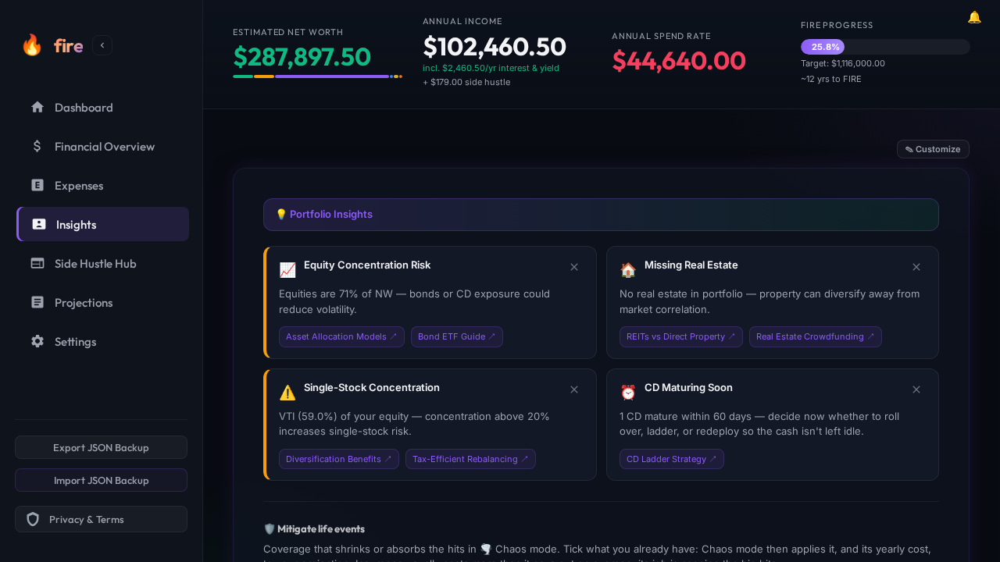
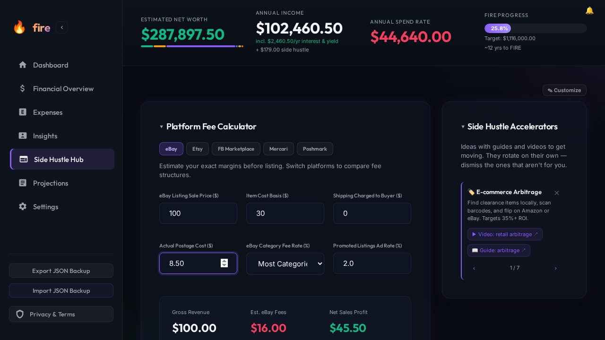
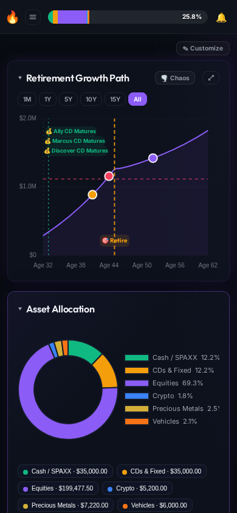

AI at two points. Code everywhere else.
Think of an OSRS essence-mining bot: deterministic, repeatable, close to free. The bot that uses the product every night is a Playwright script on a cron. AI writes it, and AI fixes what it finds. Everything between is GitHub Actions.
bot:review issue per defect it can back with a file:line cause or two reproductions.tests/journeys/*.spec.js: 2–4 step()s in the user's words, real seeded numbers in the assertions, and a screenshot baseline after every step.reporter.mjs fingerprints each failure, opens or updates a bot:journey issue with pinned screenshots, rebuilds BUGS.md, and appends the night to metrics/<month>.jsonl.bot:journey issues before other backlog and open a PR that says Refs #N, never Fixes. The bot decides when it's fixed.metrics.mjs prints flaky rate, reopen rate, time-to-fix and feature coverage. One AI pass turns outliers into rules.One pass on fire, eleven issues, each with a cause
fire is the pilot: a local-first net-worth tracker with an MCP server. The pass ran a scripted tour, not a click-through, and filed only what it could prove. A few of them:
#169 Insights says 74% equities; Asset Allocation says 72.6%
The Insights figure counted crypto as equity. The issue carried the arithmetic and the line in dashboard.js.
#178 The MCP summary disagrees with the dashboard
Claude's fire_status_summary reported a different net worth and years-to-FIRE than the screen did.
#175 The demo seed used a real person's wallet
Found in the promo video, not the app. The fix swaps in an unregistered placeholder name.
promo#174 The seed's 365-day history was dropped
Captures showed an empty trend chart because the API seed stripped a server-owned field.
layout#167 The allocation legend clips its labels
Still visible in the nightly baselines until it's fixed. That's on purpose.
phone#173 The ledger's add-sale row is unusable at 390 px
Only shows up at phone width, which is why the tour runs at two viewports.

investor reads and dismisses portfolio insights.A journey is one thing a user wants done
Named in the user's words, tagged with the feature ids from promo/spots.json (so coverage counts itself),
and asserted on numbers a user would notice. This is fire's, abridged:
test('reseller prices an eBay sale and logs it',
{ tag: ['@feature:fee-calculator', '@feature:income-logs'] }, async ({ page }) => {
await step(page, 'open Side Hustle Hub', async () => {
await openApp(page);
await openTab(page, 'sidegig');
});
await step(page, 'price an eBay sale', async () => {
await page.fill('#ebay-price', '100');
await page.fill('#ebay-cost', '30');
await page.fill('#ebay-shipping-actual', '8.50');
await expect(page.locator('#ebay-res-profit')).toHaveText('$45.50');
}, { docs: 'fee-calculator' }); // also writes docs/screenshots/fee-calculator.png
});
Every step() ends in a screenshot baseline with a fixed tolerance of 1,000 px: above the ~650 px of canvas
font noise, and far below the 6,029 px a renamed wallet produced (a 1% ratio let that through). The same steps write
the docs screenshots, so the README images can't go stale either.

price an eBay sale: the $45.50 is asserted, not just pictured.
Bugs file, dedup and close themselves
The fingerprint is repo | spec | journey | failing step | error class. The error class is coarse
(expect:toHaveText, visual-diff, timeout:locator.click) so the same bug on a
different night lands on the same issue.
| When | The reporter |
|---|---|
| New fingerprint | Opens a bot:journey issue: the step, the error, actual/diff/expected screenshots pinned to a commit, the repro command, the trace. At most 5 new per night. |
| Same fingerprint, issue open | Updates last seen and the occurrence count in the body. No comment, no noise. |
| Same fingerprint, issue closed | Reopens it and counts the reopen. |
| Journey passes | Counts a green night. At 3 in a row, closes the issue with a link to the run. This is the fix verification. |
| Failed, then passed on retry | No issue. Counted as flaky in the metrics. |
| No report at all | One (harness) issue, which closes when journeys run again. |
BUGS.md on the bot/journeys branch from the open bot:journey and bot:review issues, grouped by area: label. Nobody writes it by hand.Three ways in
/journeys <repo> review
Modes: review, adopt, add <feature>, fix <issue>, status. Each AI mode runs once and ends with a run-log entry.
nitsuah/.github journeys/
Reporter, metrics, reusable workflow and templates. No dependencies beyond Node 18. A repo adopts it with one caller workflow.
referencefire tests/journeys/
The pilot: a seeded fixture, mocked prices, a frozen clock, seven journeys, and the visual-docs workflow that reuses them.
Rollout, one repo per PR: fire (pilot) → vigil → ats-fill → nitsuah-io → skyview. The order and what's left live in TASKS.md.